| Case | Algs | Notes | |
|---|---|---|---|
| 1 | 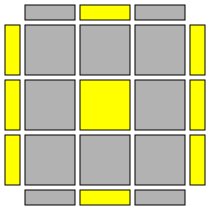 |
R U2' (R2' F R F') U2 (R' F R F') |
Same as 55 but without wide moves |
| 2 | 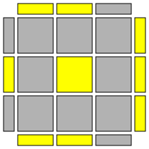 |
f (U R U' R') S' (U R U' R') F' (F R' F' R) U2 (F R' F' R2) U2' R' |
Second alg is for big cubes |
| 3 | 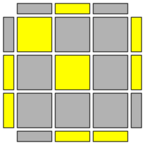 |
R' F2 R2 U2' (R' F R) U2' R2' F2 R |
|
| 4 | 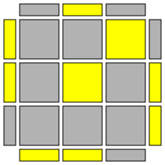 |
R' F2 R2 U2' (R' F' R) U2' R2' F2 R |
|
| 5 | 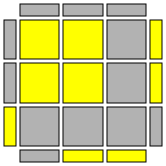 |
l' U2 L U L' U l |
|
| 6 | 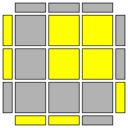 |
r U2' R' U' R U' r' |
|
| 7 | 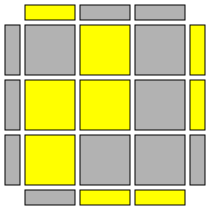 |
r U R' U R U2' r' |
|
| 8 | 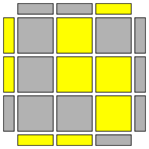 |
l' U' L U' L' U2 l |
|
| 9 | 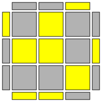 |
(R U R' U') R' F (R2 U R' U') F' |
Inverse of 13 |
| 10 | 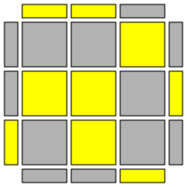 |
R U R' U (R' F R F') R U2' R' |
|
| 11 | 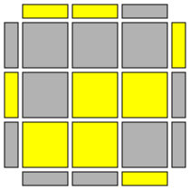 |
r' (R2 U R' U R U2' R') U M' |
M : (sune U) |
| 12 | 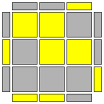 |
S (R' U' R U' R' U2' R) U2 S' |
S : (back sune U2) |
| 13 | 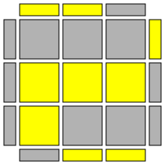 |
F (U R U' R2') F' R (U R U' R') |
Inverse of 9 Same as 52 except for the last two U moves |
| 14 | 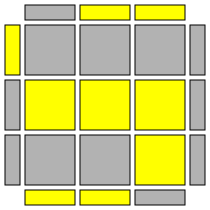 |
R' F R U R' F' R (F U' F') |
|
| 15 | 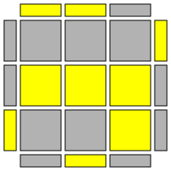 |
r' U' r (R' U' R U) r' U r |
|
| 16 | 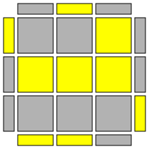 |
r U r' (R U R' U') r U' r' |
|
| 17 | 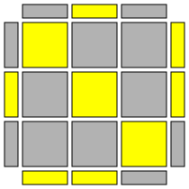 |
(F R' F' R) U (S' R U' R' S) |
|
| 18 | 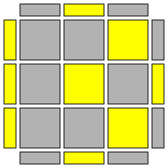 |
R U2' (R2' F R F') U2 (M' U R U' r') |
|
| 19 | 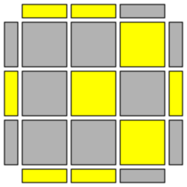 |
(S' R U R' S) U' (R' F R F') |
|
| 20 | 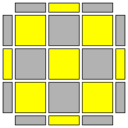 |
(S' R U R' S) U' (M' U R U' r') |
|
| 21 | 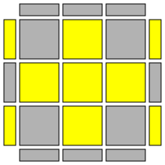 |
R U R' U (R U' R' U) R U2' R' (U) F (R U R' U')3 F' |
Second alg is diag COLL |
| 22 | 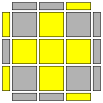 |
R U2' R2' U' R2 U' R2' U2' R R2' (D' R U R' D) R U R U' R' U R U R' U R |
Second alg is diag COLL |
| 23 | 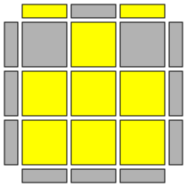 |
R2' D' R U2 R' D R U2 R (U2) R2 D R' U2 R D' R' U2 R' (U2) (sune) (back sune) R2' (D' R U R' D) R U R U' R' U' R |
Non-primary algs are COLLs |
| 24 | 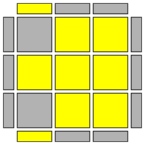 |
(r U R' U') (r' F R F') (U2) (l' U' L U) (l F' L' F) (U') (back antisune) (antisune) |
Non-primary algs are COLLs |
| 25 | 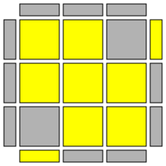 |
(F R' F' r) (U R U' r') (U) F' (r U R' U) R' F R R U2 R D R' U2 R D' R2' (U') R' U2 R' D' R U2 R' D R2 (U2) R U R' U (R U' R' U)2 R U2' R' |
Non-primary algs are COLLs |
| 26 | 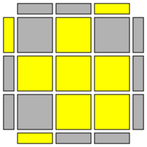 |
L' U' L U' L' U2 L (U') R U2' R' U' R U' R' |
|
| 27 | 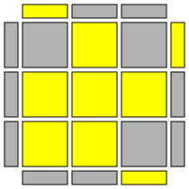 |
R U R' U R U2' R' |
|
| 28 | 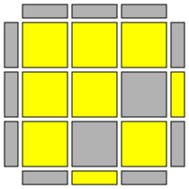 |
(R' F R) S (R' F' R) S' (r U R' U') M (U R U' R') |
First alg preserves block on back Second alg preserves block on left Both are inverses of 57 |
| 29 | 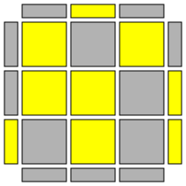 |
r2' (D' r U r' D) r2 U' r' U' r (U) (R U R' U') R U' R' (F' U' F) R U R' |
Second alg is for big cubes |
| 30 | 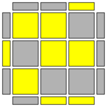 |
r' (D' r U' r' D) r2 U' r' U r U r' (U') F U (R U2 R' U')2 F' |
Second alg is for big cubes |
| 31 | 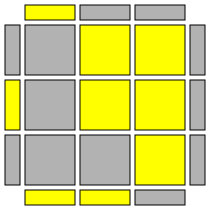 |
R' U' F U R U' R' F' R |
Inverse of 40 |
| 32 | 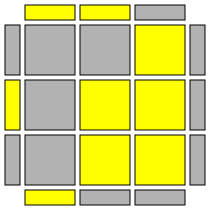 |
S (R U R' U') (R' F R f') |
Mirror inverse of 39 |
| 33 | 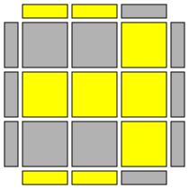 |
(R U R' U') (R' F R F') F R U' R' U R U R' F (U2) (L' U' L U) (L F' L' F) |
Second and third algs are diag OLLCP All are inverses of 37 |
| 34 | 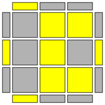 |
(f R f') U' (r' U' R U M') |
|
| 35 | 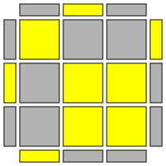 |
R U2' (R2' F R F') R U2' R' |
|
| 36 | 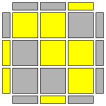 |
L' U' L U' L' U L U (L F' L' F) |
Mirror of 38 |
| 37 | 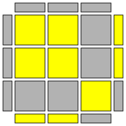 |
(F R' F' R) (U R U' R') F R U' R' U' R U R' F |
Second alg is diag OLLCP Both are inverses of 33 |
| 38 | 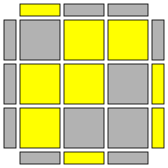 |
R U R' U R U' R' U' (R' F R F') |
Mirror of 36 |
| 39 | 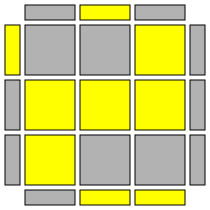 |
f' (r U r' U') (r' F r S) |
Mirror inverse of 32 |
| 40 | 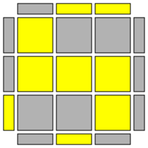 |
R' F R U R' U' F' U R |
Inverse of 31 |
| 41 | 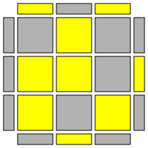 |
(R U R' U R U2' R') F (R U R' U') F' |
|
| 42 | 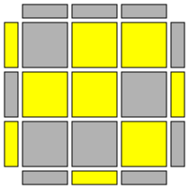 |
(F R' F' R) U2 R' U' R2 U' R2' U2' R |
|
| 43 | 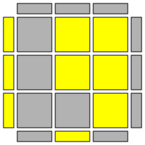 |
F' (U' L' U L) F (U') R' U' (F' U F) R (U2) f' (L' U' L U) f |
|
| 44 | 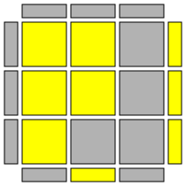 |
F (U R U' R') F' (U2) f (R U R' U') f' |
|
| 45 | 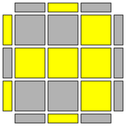 |
F (R U R' U') F' |
|
| 46 | 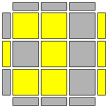 |
R' U' R' F R F' U R |
|
| 47 | 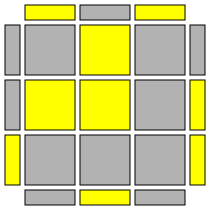 |
(F R' F' R) U2 (R U' R' U) R U2' R' |
|
| 48 | 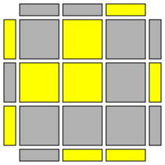 |
F (R U R' U')2 F' |
|
| 49 | 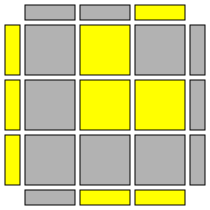 |
r U' r2' U r2 U r2' U' r |
|
| 50 | 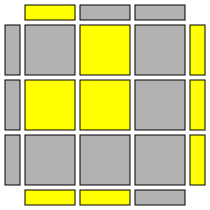 |
l' U l2 U' l2' U' l2 U l' |
|
| 51 |
F (U R U' R')2 F' (U2) f (R U R' U')2 f' |
||
| 52 |
F (U R U' R2') F' R (U2 R U2' R') |
Same as 13 except the last two U moves are U2 |
|
| 53 |
l' U' L U' (L' U L U') L' U2 l |
||
| 54 |
r U R' U (R U' R' U) R U2' r' |
||
| 55 |
r U2' (R2' F R F') U2 (r' F R F') (U) R' F R U R U' R2' F R2 U' R' U R U R' |
Primary alg is same as 1 but with wide moves Second alg is OLLCP |
|
| 56 |
L F L' (U R U' R')2 L F' L' |
||
| 57 |
S (R' F R) S' (R' F' R) (U) (R U R' U') M' (U R U' r') |
First alg preserves block on back Second alg preserves block on left Both are inverses of 28 |
|